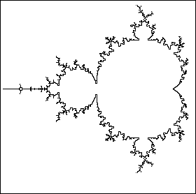

| The boundary of the Mandelbrot set is the collection of all points c for which every circle, no matter how small, centered at c encloses points in M and also points not in M. |
| Pictured below is the boundary of M. At this magnification, the boundary agrees with our intuition about boundaries. |
| However, at higher magnifications the boundary becomes very fuzzy. |
| For boundary points, microscopic movements of c can change whether the sequence zi runs away to infinity. |
| The boundary points of the Mandelbrot set belong to the Mandelbrot set. |
| (This is not true for all sets. If S is the set of all points (x, y) with
|
|  |
Return to Some features of the Mandelbrot set boundary.